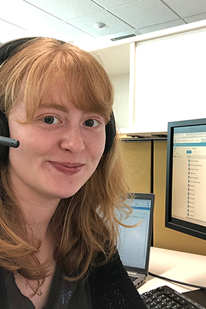
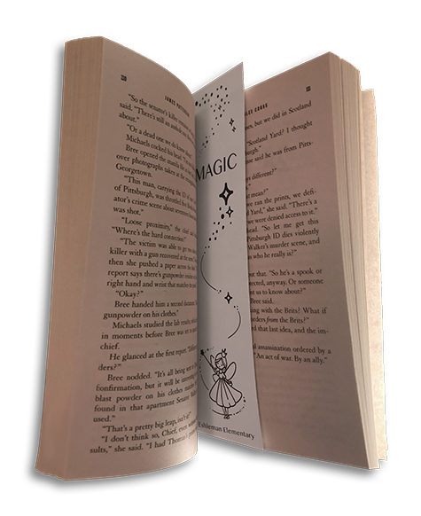
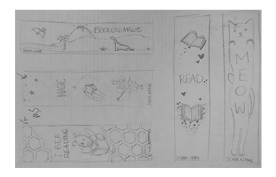
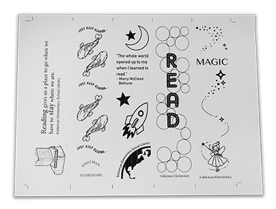
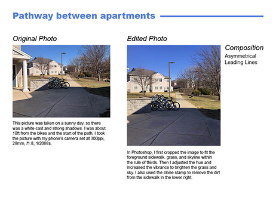
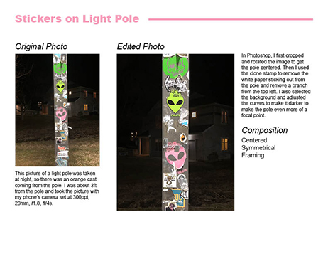
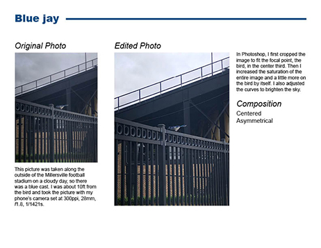
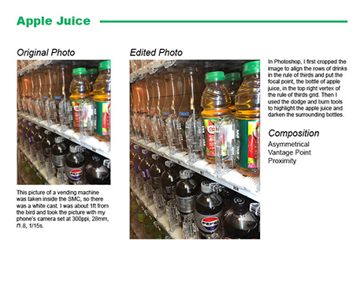
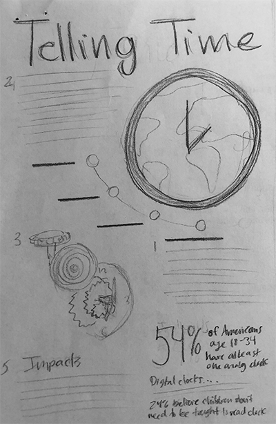
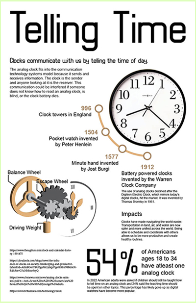

Maura LanePortfolio for AENG 110 |
|
|
|
 My name is Maura Lane. I grew up in Honey Brook, Pennsylvania and went to Twin Valley High School. I am a junior at Millersville University studying Interactive and Graphic Design. I am minoring in Graphic Communication Technology. This website holds the class projects for AENG 110, Communication and Information Systems, that I am taking for the minor. These projects showcase my work in this class that was done by hand and in Adobe Indesign and Photoshop.
|
Package ProjectThe package project started with breaking down a small cereal box and recreating its shape to understand the structure of the box. Then we had to brainstorm a new cereal brand and design for the small box. The final step was to draw the box in two-point perspective and draw the design on it. |
Bookmark ProjectThe bookmark project started with thumbnail sketches of two bookmarks for Eshleman Elementary School. Then we made the designs in Adobe InDesign using clip art. We then worked in groups to put our designs on one document to be printed in mass; 100 sheets. The final step was to print the bookmarks using offset lithography.   Thumbnail Sketches
 Group layout of final bookmark designs
|
Digital PhotographyThe digital photography project started with taking pictures using photography techniques like rule of thirds and framing. Then we used Adobe Photoshop to edit the images by cropping and adjusting the colors. The final step was to use Adobe InDesign to layout the images with a description and explaination of the edits that were made to the images.     |
Video ProjectThe video project was to make a one minute commercial for a feature of Millersville University's campus. My group, Kat, Alivia, and Charlotte, chose to advertise the art galleries in the art and design building, Breidenstibne Hall. We made a storyboard and script and then filmed in the galleries and recorded voiceovers. The final step was to edit the video in iMovie. |
InfographicThe infographic project started with chosing a technology that fits within the communication techonoloy model. I chose the analog clock. We made a thumbnail sketch and then used Adobe InDesign to layout the infomation and graphics. I used Adobe Illustor to make my graphics of the inside of an analog clock.  Brainstorming  Final Project |
|
©2025 Maura Lane |